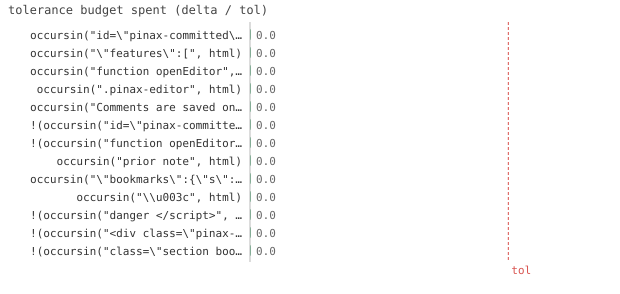

13/13 passed · 0.32s
| id | label | got | want | Δ vs tol (kind) | |
|---|---|---|---|---|---|
| ✓ | t473 | occursin("id=\"pinax-committed\"", html) @ test_interactive.jl:20 code | 1.0 | 1.0 | 0.0 vs 0.5 (abs) |
| ✓ | t474 | occursin("\"features\":[", html) @ test_interactive.jl:21 code | 1.0 | 1.0 | 0.0 vs 0.5 (abs) |
| ✓ | t475 | occursin("function openEditor", html) @ test_interactive.jl:22 code | 1.0 | 1.0 | 0.0 vs 0.5 (abs) |
| ✓ | t476 | occursin(".pinax-editor", html) @ test_interactive.jl:23 code | 1.0 | 1.0 | 0.0 vs 0.5 (abs) |
| ✓ | t477 | occursin("Comments are saved only in this browser", html) @ test_interactive.jl:25 code | 1.0 | 1.0 | 0.0 vs 0.5 (abs) |
| ✓ | t478 | !(occursin("id=\"pinax-committed\"", html)) @ test_interactive.jl:36 code | 1.0 | 1.0 | 0.0 vs 0.5 (abs) |
| ✓ | t479 | !(occursin("function openEditor", html)) @ test_interactive.jl:37 code | 1.0 | 1.0 | 0.0 vs 0.5 (abs) |
| ✓ | t480 | occursin("prior note", html) @ test_interactive.jl:51 code | 1.0 | 1.0 | 0.0 vs 0.5 (abs) |
| ✓ | t481 | occursin("\"bookmarks\":{\"s\":true", html) @ test_interactive.jl:52 code | 1.0 | 1.0 | 0.0 vs 0.5 (abs) |
| ✓ | t482 | occursin("\\u003c", html) @ test_interactive.jl:65 code | 1.0 | 1.0 | 0.0 vs 0.5 (abs) |
| ✓ | t483 | !(occursin("danger </script>", html)) @ test_interactive.jl:66 code | 1.0 | 1.0 | 0.0 vs 0.5 (abs) |
| ✓ | t484 | !(occursin("<div class=\"pinax-comments\">", html)) @ test_interactive.jl:79 code | 1.0 | 1.0 | 0.0 vs 0.5 (abs) |
| ✓ | t485 | !(occursin("class=\"section bookmarked\"", html)) @ test_interactive.jl:92 code | 1.0 | 1.0 | 0.0 vs 0.5 (abs) |

⤓ downloadPinax.reset!(; assets=:inline)
html = read(Pinax.render(; out=site("d1")), String)
@test occursin("id=\"pinax-committed\"", html) # embedded baseline for export merge@test occursin("\"features\":[", html)@test occursin("function openEditor", html) # pinax.js inlined (single self-contained file)@test occursin(".pinax-editor", html) # pinax.css inlined@test occursin("Comments are saved only in this browser", html)Pinax.reset!(; features=())
html = read(Pinax.render(; out=site("d2")), String)
@test !occursin("id=\"pinax-committed\"", html)@test !occursin("function openEditor", html)f = joinpath(tmp, "c.toml")
Pinax.add_comment(f, :s, "prior note"; author="llm")
Pinax.set_bookmark!(f, :s, true)
Pinax.reset!()
html = read(Pinax.render(; out=site("d3"), comments_file=f), String)
@test occursin("prior note", html)@test occursin("\"bookmarks\":{\"s\":true", html)f = joinpath(tmp, "c2.toml")
Pinax.add_comment(f, :s, "danger </script> & <b>"; author="x")
Pinax.reset!()
html = read(Pinax.render(; out=site("d4"), comments_file=f), String)
@test occursin("\\u003c", html) # `<` escaped inside the JSON@test !occursin("danger </script>", html) # the raw breakout sequence must not appearf = joinpath(tmp, "c3.toml")
Pinax.add_comment(f, :s, "hidden text"; author="x")
Pinax.reset!(; features=(:bookmarks,))
html = read(Pinax.render(; out=site("d5"), comments_file=f), String)
@test !occursin("<div class=\"pinax-comments\">", html)f = joinpath(tmp, "c4.toml")
Pinax.set_bookmark!(f, :s, true)
Pinax.reset!(; features=(:comments,))
html = read(Pinax.render(; out=site("d6"), comments_file=f), String)
@test !occursin("class=\"section bookmarked\"", html){kind=link}